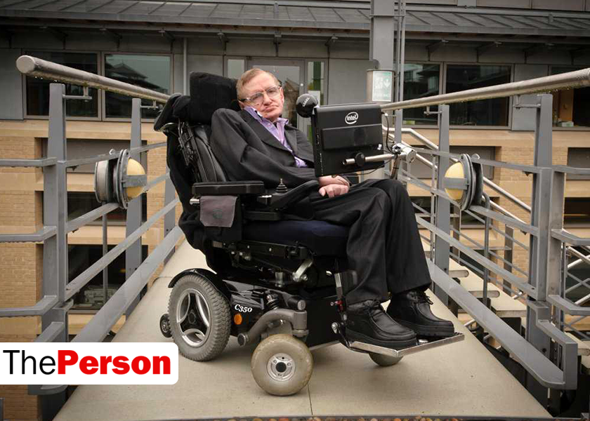
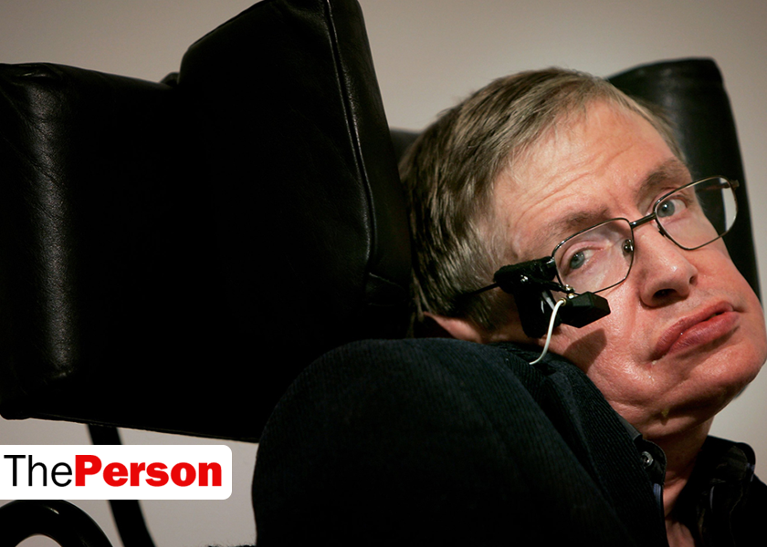
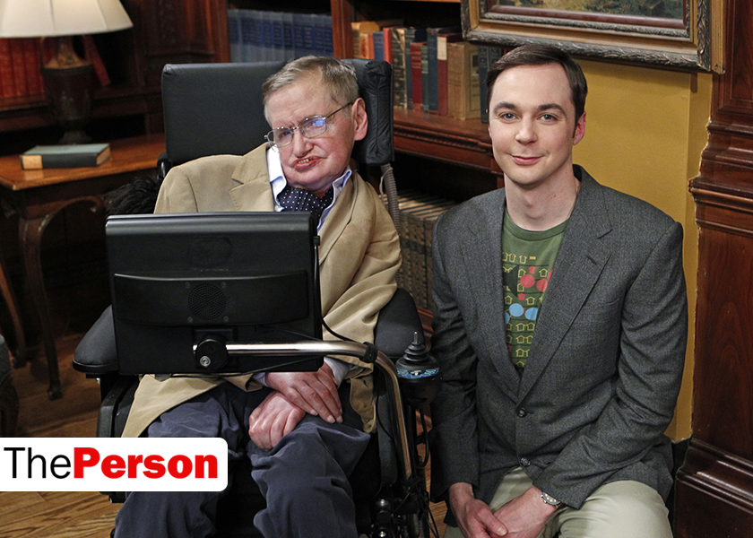

Имя: Стивен Уильям Хокинг (Stephen William Hawking)
Дата рождения: 08-01-1941
Место рождения:
Оксфорд, Великобритания
Возраст: 77 лет
Деятельность: физик, космолог
Этот английский учёный — яркий пример того, что даже страшная болезнь не помеха, если ты действительно чего-то хочешь. Вопреки диагнозу и прогнозам врачей Хокинг стал одним из самых революционных учёных XX века.
Родители Хокинга имели высшее образование, оба окончили университет Оксфорда: отец изучал там медицину, а мать — политику, философию и экономику. Познакомились они уже после начала Второй мировой в медицинском научном институте, где мать была секретарём, а отец — исследователем. Во время войны они жили в Лондоне, но когда город начали бомбить, перебрались назад в Оксфорд (между немецкой и английской армией было условие: не обстреливать научные центры, которые находились в Кембридже и Оксфорде). Там и родился будущий учёный. После окончания войны родители опять вернулись в столицу Великобритании, поселившись в районе Хайгейт.
Кроме Стивена у его родителей было ещё трое детей: двое младших дочерей и сын Эдвард, которого усыновили, когда Стивену было 14 лет.
Маленьким Стивен не слишком ладил с детьми. Когда ему было два с половиной, родители решили, что мальчику пора в детсад, но в первый же день всё закончилось истерикой: Стивен не хотел и не умел играть с чужими детьми. Следующий полтора года им занималась мама, о детском саду речь зашла, лишь когда родилась его младшая сестра.
В школе Стивену также не очень удавалось сдружиться с ребятами: мальчик был тихим и застенчивым. Но ситуацию выручал его лучший друг, живущий по соседству — Говард. На удивление разные благовоспитанный Стивен и сорвиголова Говард дружили много времени проводили вместе. Говард даже начал учить Стивена играть в футбол, но того спорт не увлёк всё равно.
Когда Стивену было восемь, его родители купили дом в городке Сент-Олбанс, куда вскоре и переехали. Там Стивена отдали в бывшую школу для девочек, в которой после войны появились и классы для мальчишек. Но в новой школе Стивен успел отучиться едва семестр, как его отец уехал в длительную командировку в Африку, поэтому мать взяли троих детей и уехала к друзьям на Майорку. Там Стивен занимался с частным учителем, который преподавал школьную программу детям маминой подруги.
Вернувшись в Сент-Олбанс, мальчика отдали в обычную школу. Несмотря на то, что по успеваемости Стивен звёзд не хватал, одноклассники дали ему кличку «Эйнштейн», наверное, потому, что его больше всего волновало происхождение Вселенной.
В последних классах средней школы Стивен увлёкся физикой и математикой, решив дальше идти в этом направлении, что не очень понравилось его отцу. Тот видел будущее сына в медицине. Но физика Стивена привлекала больше всего, он всё никак не забросил желание докопаться до сути происхождения всего живого. Поэтому семнадцатилетний выпускник школы поступил в Оксфорд, а чтобы подружиться с сокурсниками, записался на греблю.
В 1962 году Хокинг уже имел степень бакалавра, а через три года закончил ещё и университет в Кембридже со званием доктора философии.
На последнем курсе обучения в Оксфорде Стивен заметил, что у него появились проблемы с координацией движений. Обратившись к врачу, он получил полушутливый совет поменьше пить.
Будучи студентом уже Кембриджа, однажды он упал, катаясь на коньках, и не смог подняться. Мать отвела его к семейному врачу, тот посоветовал пройти полное обследование. Как гром среди ясного неба прозвучал диагноз — боковой амиотрофический склероз. 21-летнему Стивену врачи давали не больше двух лет жизни.
Тем не менее даже прогрессирующая болезнь не помешала ему работать. В 1965 Хокинг стал исследователем при Кембриджском университете. Он работал при Институте теоретической астрономии, а также Институте астрономии, преподавал на кафедрах физики и математики.
В конце 1960-х его здоровье резко ухудшилось — самостоятельно передвигаться он больше не мог, поэтому пересел в инвалидную коляску.
И даже это не помешало ему упорно работать над своими теориями о происхождении Вселенной.
Уже в 29 лет он разработал свою первую научную теорию о чёрных дырах, предположив, что существуют очень маленькие их экземпляры, объёмом с протон.
В 1974 его приняли в Лондонское Королевское общество, благодаря его разработкам по теме термодинамики в описании чёрных дыр.
В следующем году он представил учёному совету свою теорию об испарениях чёрных дыр в следствии неизвестного раньше явление, которое стали называть «излучением Хокинга».
В 1977 Стивен стал профессором гравитационной физики, через два года — математики.
В 1985 Хокинг пережил воспаление легких, из-за осложнений врачам пришлось сделать ему трахеотомию, и учёный потерял возможность разговаривать. К счастью, его друзья-учёные нашли выход для блестящего ума — разработали синтезатор речи, управлять которым можно было буквально движением одного пальца. Хотя на самом деле в случае с Хокингом всем управляет единственная лицевая мышца, которая ещё осталась подвижной у учёного. К ней приставлен датчик, который и реагирует на движения.
Хокинг — один их первых, кто предложил теорию о том, что чёрные дыры — это своеобразные тоннели в параллельные вселенные. Также он с научной точки зрение доказал возможность существование машин времени и инопланетян.
Хокинг понимает, что наука — это не только для профессоров университетов, поэтому занимается её популяризацией. В 1988 появилась его первая книга — «Краткая история времени», пережившая уже десятки переизданий.
Через пять лет вышла следующая — «Чёрные дыры и молодые вселенные», в 2001 — «Мир в ореховой скорлупе».
Через 13 лет после выхода первой книги, Стивен доработал её с ещё одним учёным — Леонардом Млодиновым, так появилась «Кратчайшая история времени».
Не обошёл вниманием Хокинг и самых младших будущих исследователей. Вместе с дочерью Люси, они уже написали три книги о путешествиях выдуманного персонажа Джорджа. В этих книгах они объясняют юным умам основы физики и астрономии. Первой в 2006 году вышла «Джордж и тайны Вселенной».
Начиная с 1997, учёный также стал ведущим научно-популярного сериала «Вселенная Стивена Хокинга», в 2010 вышел ещё один — трёхсерийный «Во Вселенную со Стивеном Хокингом». В 2014 начались съемки «Науки будущего Стивена Хокинга».
В 23 года Стивен женился. Его женой стала Джейн Уайлд. Брак продержался почти 30 лет, хотя последние пять они уже прожили порознь. Вместе с Джейн у Стивена трое детей.
Второй его женой стала американка Элайн Мейсон, которая была его сиделкой. Они поженились в 1995, развелись в 2006.
Стивен не скрывает, что является атеистом. Он также входит в список 1 300 учёных, которые подписали петицию против преподавания школьных предметов через призму креационизма, то есть теории о сотворении мира Богом.
В 2009 Хокинг готовился к полёту в космос, но проект отменили.
В 2014 году в прокат вышел фильм «Стивен Хокинг. Теория всего». Сценарий написали по мотивам книги первой жены Хокинга. На премьеру они пришли вместе, впервые за много лет.
В 2015 в Королевском обществе учёных появилась медаль имени Стивена Хокинга. Её будут вручать тем культурным деятелям, которые будут популяризировать науку.